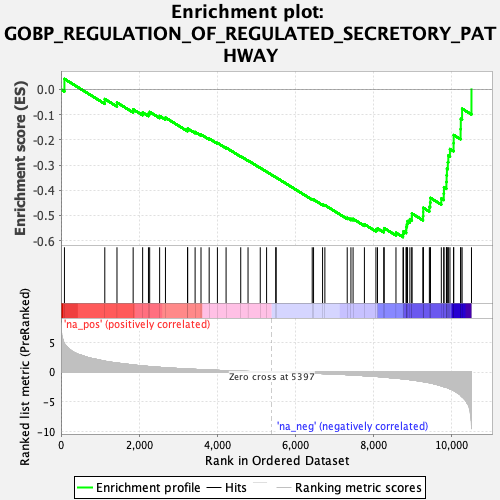
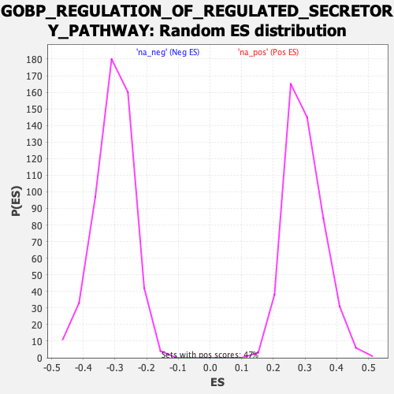

| Dataset | qlf.KOd4vsWTd4_gsea_score |
| Phenotype | NoPhenotypeAvailable |
| Upregulated in class | na_neg |
| GeneSet | GOBP_REGULATION_OF_REGULATED_SECRETORY_PATHWAY |
| Enrichment Score (ES) | -0.58582956 |
| Normalized Enrichment Score (NES) | -1.9215502 |
| Nominal p-value | 0.0 |
| FDR q-value | 0.021353552 |
| FWER p-Value | 0.36 |

| SYMBOL | RANK IN GENE LIST | RANK METRIC SCORE | RUNNING ES | CORE ENRICHMENT | |
|---|---|---|---|---|---|
| 1 | FGR | 88 | 4.757 | 0.0415 | No |
| 2 | DVL1 | 1121 | 1.814 | -0.0382 | No |
| 3 | DOC2A | 1433 | 1.509 | -0.0522 | No |
| 4 | ATP2A2 | 1847 | 1.185 | -0.0792 | No |
| 5 | BCR | 2090 | 1.015 | -0.0918 | No |
| 6 | P2RY1 | 2239 | 0.930 | -0.0962 | No |
| 7 | ADORA2A | 2270 | 0.912 | -0.0895 | No |
| 8 | PREPL | 2525 | 0.788 | -0.1055 | No |
| 9 | STXBP5 | 2674 | 0.730 | -0.1120 | No |
| 10 | GATA1 | 3239 | 0.514 | -0.1606 | No |
| 11 | AP1G1 | 3243 | 0.512 | -0.1555 | No |
| 12 | PDPK1 | 3433 | 0.452 | -0.1689 | No |
| 13 | VAMP8 | 3584 | 0.404 | -0.1790 | No |
| 14 | GIT1 | 3793 | 0.344 | -0.1953 | No |
| 15 | RABGEF1 | 4004 | 0.288 | -0.2124 | No |
| 16 | LGALS9 | 4226 | 0.234 | -0.2311 | No |
| 17 | RAP1A | 4601 | 0.144 | -0.2654 | No |
| 18 | RAP1B | 4788 | 0.107 | -0.2821 | No |
| 19 | BACE1 | 5101 | 0.051 | -0.3114 | No |
| 20 | RAB5A | 5263 | 0.026 | -0.3265 | No |
| 21 | FMR1 | 5497 | -0.015 | -0.3487 | No |
| 22 | DTNBP1 | 5508 | -0.016 | -0.3495 | No |
| 23 | FBXL20 | 6431 | -0.185 | -0.4358 | No |
| 24 | SNAPIN | 6465 | -0.192 | -0.4370 | No |
| 25 | RAB3GAP1 | 6696 | -0.249 | -0.4564 | No |
| 26 | STXBP3 | 6755 | -0.262 | -0.4592 | No |
| 27 | REST | 7327 | -0.427 | -0.5094 | No |
| 28 | GSK3B | 7422 | -0.460 | -0.5135 | No |
| 29 | SPHK2 | 7477 | -0.482 | -0.5136 | No |
| 30 | PFN2 | 7767 | -0.599 | -0.5350 | No |
| 31 | STXBP2 | 8062 | -0.718 | -0.5556 | No |
| 32 | IL4 | 8102 | -0.738 | -0.5516 | No |
| 33 | GIPC1 | 8262 | -0.824 | -0.5582 | No |
| 34 | RPH3AL | 8274 | -0.829 | -0.5505 | No |
| 35 | CALM3 | 8575 | -1.014 | -0.5686 | No |
| 36 | CCR2 | 8756 | -1.121 | -0.5741 | Yes |
| 37 | SNX4 | 8766 | -1.126 | -0.5631 | Yes |
| 38 | TRPV6 | 8837 | -1.187 | -0.5573 | Yes |
| 39 | GNAI2 | 8838 | -1.188 | -0.5449 | Yes |
| 40 | RAB3D | 8856 | -1.206 | -0.5338 | Yes |
| 41 | GAB2 | 8871 | -1.216 | -0.5224 | Yes |
| 42 | KCNB1 | 8931 | -1.258 | -0.5148 | Yes |
| 43 | NCKAP1L | 8982 | -1.307 | -0.5059 | Yes |
| 44 | VPS18 | 8983 | -1.307 | -0.4922 | Yes |
| 45 | STXBP1 | 9268 | -1.585 | -0.5027 | Yes |
| 46 | LAMP1 | 9273 | -1.589 | -0.4864 | Yes |
| 47 | ITGB2 | 9274 | -1.590 | -0.4697 | Yes |
| 48 | RAC2 | 9430 | -1.776 | -0.4659 | Yes |
| 49 | ITGAM | 9450 | -1.801 | -0.4488 | Yes |
| 50 | CDK5 | 9458 | -1.811 | -0.4304 | Yes |
| 51 | RAB3A | 9736 | -2.297 | -0.4328 | Yes |
| 52 | RAB27A | 9799 | -2.428 | -0.4133 | Yes |
| 53 | STX1A | 9804 | -2.438 | -0.3880 | Yes |
| 54 | F2RL1 | 9866 | -2.554 | -0.3670 | Yes |
| 55 | BAIAP3 | 9872 | -2.562 | -0.3406 | Yes |
| 56 | UNC13D | 9880 | -2.569 | -0.3143 | Yes |
| 57 | HMOX1 | 9903 | -2.617 | -0.2889 | Yes |
| 58 | NOTCH1 | 9915 | -2.659 | -0.2620 | Yes |
| 59 | MICAL1 | 9957 | -2.794 | -0.2366 | Yes |
| 60 | SYT13 | 10050 | -3.072 | -0.2132 | Yes |
| 61 | PRKCB | 10053 | -3.078 | -0.1810 | Yes |
| 62 | CD84 | 10230 | -3.858 | -0.1574 | Yes |
| 63 | SYP | 10235 | -3.894 | -0.1168 | Yes |
| 64 | SLC4A8 | 10268 | -4.123 | -0.0766 | Yes |
| 65 | SYT11 | 10508 | -9.472 | -0.0000 | Yes |
